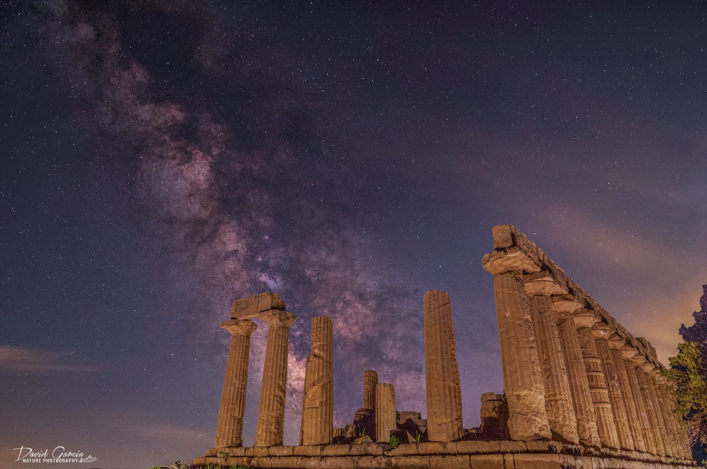
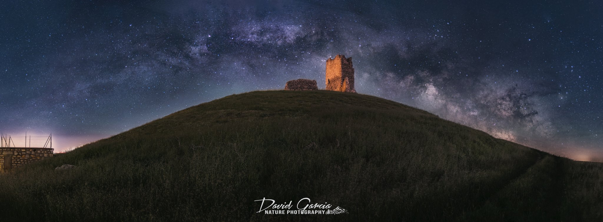
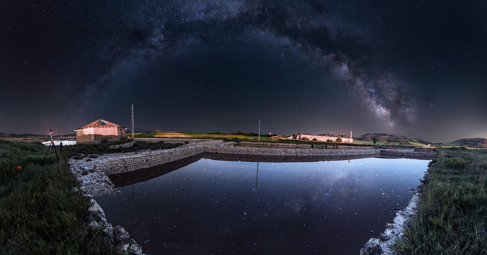

01 / ARQUITECTURA
La huella del tiempo
La arquitectura conserva historias que siguen presentes en el paisaje. Fotografiar estos lugares es otra forma de detenerse a observar sus detalles.
Más allá de los proyectos
La fotografía es una forma de descubrir lugares, mirar el cielo de otra manera y conservar momentos que merecen ser recordados.
En Instagram comparto más imágenes y pequeñas historias de mis experiencias fotográficas, desde los paisajes hasta los detalles que hacen diferente cada sesión.
Visitar @davidgarciacabello ↗Una selección de imágenes de mi archivo fotográfico. Cada lugar ofrece una perspectiva distinta y una nueva oportunidad para observar el paisaje.

01 / ARQUITECTURA
La arquitectura conserva historias que siguen presentes en el paisaje. Fotografiar estos lugares es otra forma de detenerse a observar sus detalles.

02 / PATRIMONIO
Los castillos y las construcciones históricas forman parte de un paisaje que cambia con la luz, la estación y el momento en que lo contemplamos.

03 / PAISAJE
Las formas, las líneas y las texturas del terreno también cuentan una historia. Una mirada diferente sobre el entorno y sus contrastes.
Si te interesa la fotografía de paisaje, la Vía Láctea y los fenómenos astronómicos, te invito a descubrir el resto de mi trabajo en Instagram.
Descubrir mi perfil de Instagram ↗